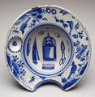

|  | English (Lambeth) Barber's Bowl About 1690 Tin-glazed earthenware 3-1/2 inches high, 10-1/4 inches in diameter Gift of Mr. and Mrs. George R. Steiner 96.36.6 |
This type of pottery is known as English Delftware because the most famous center of production for such blue-and-white TIN-GLAZED EARTHENWARE was the town of Delft, in Holland. Holland in the seventeenth century was a great maritime power. The Dutch East India Company, established in 1602 to trade with the Far East, supplied Europeans with exotic goods, including much-coveted Chinese PORCELAIN. Chinese factories began to make porcelain objects, or "china," especially for the European market. The port of Canton, famous for blue-and-white ware in the classic MING style, was one of the most important producers of this "export porcelain," as it is called. Dutch and English manufacturers wanted to copy these popular Chinese objects but did not know the secret of making porcelain. So they made imitations in tin-glazed earthenware.

Key ideas.
Where does it come from?
What does it look like?
How was it used?
How was it made?
Discussion questions.
Additional resources.
Select another piece.